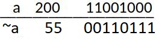
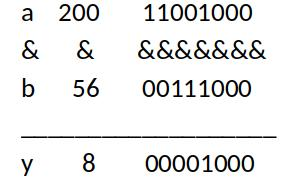
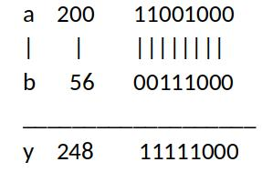
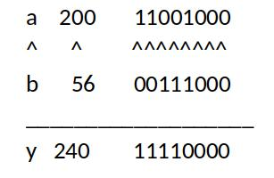
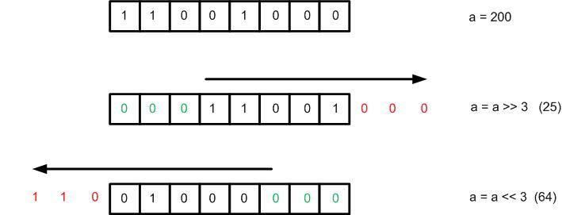

The topic of bit manipulation in C doesn’t seem to get as much attention in many C programming books and study guides. Perhaps because it’s a not used regularly by application developers and system programmers.
Knowledge of bit manipulation is however downright critical in the fields of embedded systems, kernel space programming and device drivers programming, where the programmer directly accesses registers i.e. talking to hardware.
Programmer’s access registers directly via Read-Modify-Write (RMW) operations. RMW operations in turn rely heavily on bitwise operators and other parts of the C programming language that facilitate bit manipulation. In order to understand and correctly use RMW operations, a solid foundation in the basics of bit manipulation must me developed. This article will attempt to provide the reader with said foundation.
Bitwise operators
Let us first start by introducing the bitwise operators:
| Bitwise operator | Description | What it does |
|---|---|---|
| & | Bitwise AND operator | ‘AND’s two values at the binary level |
| | | Bitwise OR operator | ‘OR’s two values at the binary level |
| ^ | Bitwise XOR operator | ‘XOR’s two values at the binary level |
| ~ | Bitwise One’s complement operator | Flips every bit in the register |
| >> | Bitwise right shift operator | Shifts a value to the right at the bit level by a specified number of bits |
| << | Bitwise left shift operator | Shifts a value to the left at the bit level by a specified number of bits |
Consider the code snippet below. It declares three unsigned 8 bit integer variables; a,b & y. And initializes a to 200, b to 56 and y to 0.
uint8_t a = 200;
uint8_t b = 56;
uint8_t y = 0;
The One’s complement (NOT) unary operator simply flips all of the bits at a binary level as shown in Figure 1.
y = ~a;

If a bitwise AND is performed between a and b, the result is 8. Note how the bitwise AND operation performs a Boolean logical ANDing at the bit level.
y = a & b;

A bitwise OR performed between a and b, results in 248.
y = a | b;

A bitwise XOR performed between a and b, results in 240.
y = a ^ b;

A bitwise right shift (by three bits) performed on a, results in 25.
y = a >> 3;

And finally, a bitwise left shift (by 3 bits) performed on a, results in 64.
y = a << 3;
The only reason this result is only 64, is because the three most significant bits are outside the bounds of the unsigned 8-bit integer variable and are therefore truncated i.e. they don’t count. If a and y where both say 16 bit unsigned integers, the result of this operation becomes 1600.
Note that shifting a value to the left by x bits, is equivalent to multiplying that value by \(2^x\). This is exactly what happened here i.e. \(200 << 3\) is equivalent to 200 * \(2^3\) . More on this in the next paragraph.
At this point it is important to note that bit shifts can facilitate multiplication and division operations by’power of two’ literals. For example, if our goal is to multiply a variable x by 8 ( \(2^3\) ), it can be achieved through good old fashioned multiplication; or by bit shifting the variable x by 3 times to the left.
y = x * 8; is equivalent to y = x << 3;
Similarly, dividing (integer division) a variable x by 8 \(2^3\), can be achieved by bit shifting the variable x by 3 times to the right.
y = x / 8; is equivalent to y = x >> 3;
You can verify all the operations mentioned so far by compiling and running this simple C program with GCC or your favourite C compiler:
#include <stdio.h>
#include <stdint.h>
int main (void) {
uint8_t a,b,c,y;
uint16_t a16, y16;
a = 200;
b = 56;
c = 16;
y = 0;
a16 = 200;
y16 = 0;
y = ~200;
printf(" The one's complement (NOT) of 200 is %i \n",(unsigned int)y);
y = a & b;
printf(" Bitwise ANDING of 200 and 56 gives %i \n",(unsigned int)y);
y = a | b;
printf(" Bitwise ORING of 200 and 56 gives %i \n",(unsigned int)y);
y = a ^ b;
printf(" Bitwise XORING of 200 and 56 gives %i \n",(unsigned int)y);
y = a << 3;
printf(" Bitwise left shift by 3 of the value 200 (8-bit) gives %i \n",(unsigned int)y);
y16 = a16 << 3;
printf(" Bitwise left shift by 3 of the value 200 (16-bit) gives %i \n",(unsigned int)y16);
y = a >> 3;
printf(" Bitwise right shift by 3 of the value 200 gives %i \n",(unsigned int)y);
printf(" Multiplying the value 16 by 8 (2^3) gives %i. Bit shifting the value 16 by 3 bits to the left also gives %i \n",(unsigned int)c*8, (unsigned int) c<<3);
printf(" Dividing the value 16 by 8 (2^3) gives %i. Bit shifting the value 16 by 3 bits to the right also gives %i \n",(unsigned int)c/8, (unsigned int) c>>3);
return 0;
}
when compiling and running the above program, it outputs:
The one's complement (NOT) of 200 is 55
Bitwise ANDING of 200 and 56 gives 8
Bitwise ORING of 200 and 56 gives 248
Bitwise XORING of 200 and 56 gives 240
Bitwise left shift by 3 of the value 200 (8-bit) gives 64
Bitwise left shift by 3 of the value 200 (16-bit) gives 1600
Bitwise right shift by 3 of the value 200 gives 25
Multiplying the value 16 by 8 (2^3) gives 128. Bit shifting the value 16 by 3 bits to the left also gives 128
Dividing the value 16 by 8 (2^3) gives 2. Bit shifting the value 16 by 3 bits to the right also gives 2
Compound assignment operators
The compound assignment operators consist of a binary operator (operator that operates on two variables) and the simple assignment operator. They perform the operation of the binary operator on both operands and store the result of that operation into the left operand i.e. x += y adds the values of variables x and y and stores the result back into x. This operation is a shorthand version of x = x + y
All arithmetic compound assignment operators and their expanded equivalent operations are listed below:
| Compound assignment | Equivalent expanded assignment |
|---|---|
| x <op>= y | x = x <op> y |
| x += y | x = x + y |
| x -= y | x = x – y |
| x *= y | x = x * y |
| x /= y | x = x / y |
Compound assignment operator notation also works for all 2-variable (binary) bitwise operators:
| Compound assignment | Expanded equivalent |
|---|---|
| x &= y | x = x & y |
| x |= y | x = x | y |
| x ^= y | x = x ^ y |
| x <<= y | x = x << y |
| x >>= y | x = x >> y |
There’s no compound assignment operator for the bitwise one’s complement operator ~ since it a unary operator.
Non-Decimal Numerical Representation in C
In C an integer number can be represented in decimal, binary, hexadecimal and octal formats through the use of prefixes:
- To represent a number in decimal no prefix is needed, i.e. x = 255
- To represent a binary, precede it with a 0b, i.e. x = 0b11111111
- To represent a number in hexadecimal, precede it with a 0x, i.e. x = 0xff
- To represent a number in octal, precede it with 0, i.e. x = 0377
While the numerical representation utilized matters little to the compiler (all numbers end up being processed in binary), in some instances using different numerical representations when writing a program can improve the readability of the program.
Another way to represent a number is to left shift a 1 by an arbitrary number of bits. consider the number 8. In binary, number 8 is represented as 0b00001000. That’s basically a ‘1’ in the third position (start counting from right to left). Therefore number 8 can also be represented with a left shift operation as 1 << 3.
In a similar manner we have:
| Decimal | Binary equivalent | Bit mask equivalent |
|---|---|---|
| 1 | 0b00000001 | 1 << 0 |
| 2 | 0b00000010 | 1 << 1 |
| 4 | 0b00000100 | 1 << 2 |
| 8 | 0b00001000 | 1 << 3 |
| 16 | 0b00010000 | 1 << 4 |
| 32 | 0b00100000 | 1 << 5 |
| 64 | 0b01000000 | 1 << 6 |
| 128 | 0b10000000 | 1 << 7 |
Using this mask representation works nicely for numbers that are powers of two. Since these numbers consist of a single ‘1’ value (set bit) in a particular bit position. What if we have a number that was not a power of two, say something like 14 or 25?
- Number 14 is equivalent to 8+4+2, or in binary 0b00001110. This can be written as: (1 << 3) | (1 << 2) | (1 << 1)
- Number 25 is equivalent to 16+8+1 or in binary 0b00011001. This can be written as (1 << 4) | (1 << 3) | (1 << 0)
Using this approach, any positive integer can be represented using this mask representation by either a single left shift of 1 , or by bitwise ORing multiple left shifts of ‘1’ !
The reader is now ready to tackle RMW operations! They will be covered in the next article in this series.